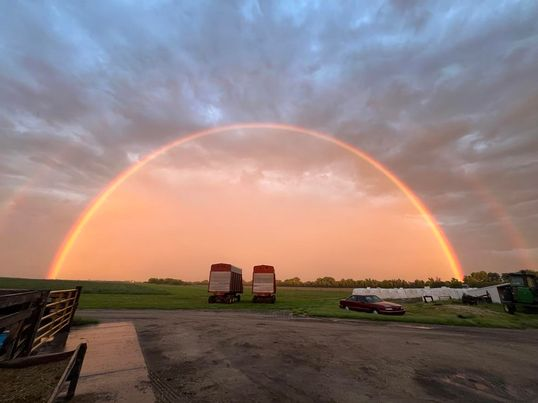

Student • Creator • Builder
Hello, I’m Mary.
Welcome to my About Me page. I am a student at Brigham Young University, and I enjoy both creative and hands-on work. This site shares a little about my background, interests, and experiences.
Quick Snapshot
- BYU student
- Technology and Engineering major
- Raised on a farm in Northeast Iowa
- Interested in art, design, and building projects
Education
I am currently studying Technology and Engineering at BYU. My classes have helped me build skills in problem solving, design, and technical work.
I enjoy learning in ways that combine creativity with practical application. That is one reason this major fits me so well.
Background
I was born and raised on a small farm in Northeast Iowa with my mom, dad, and five siblings. Growing up there taught me the value of hard work, responsibility, and family.
We raised dairy and beef cows, along with several dogs. Life on a farm gave me many opportunities to learn by doing and to appreciate where I come from.
Interests and Hobbies
I enjoy a variety of creative projects, including art, woodworking, quilting, and design. I like making things that are both meaningful and useful.
I also enjoy photography and creating projects that let me combine technical skill with personal expression. My portfolio page shows some examples of the work I have done.
Where I’m From
A few images and moments that reflect home and the environment I grew up in.

